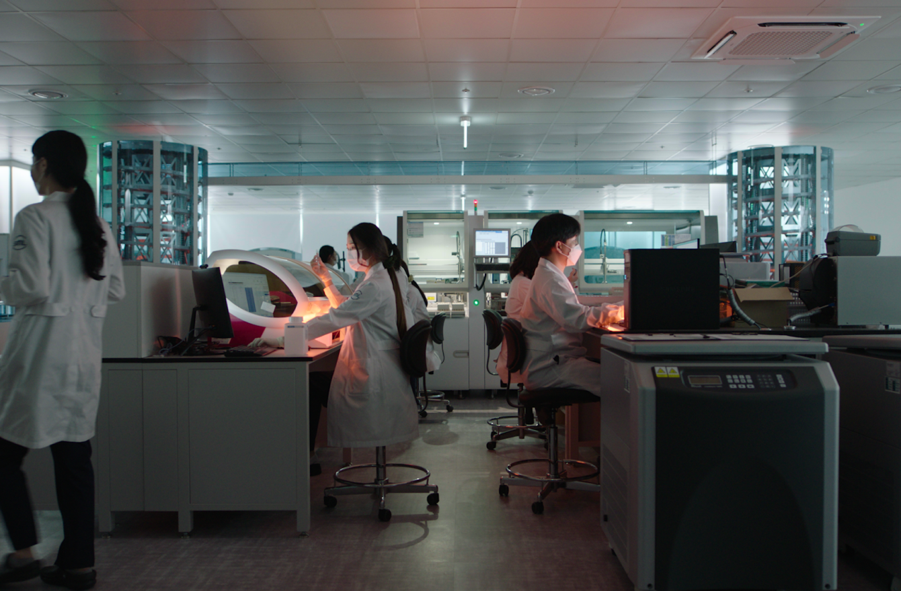
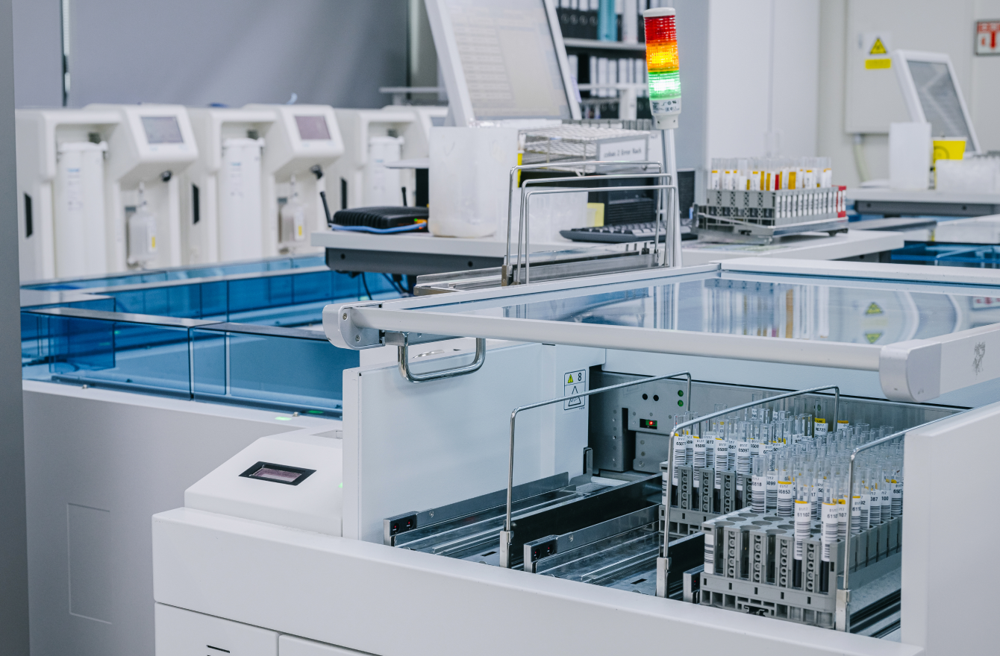
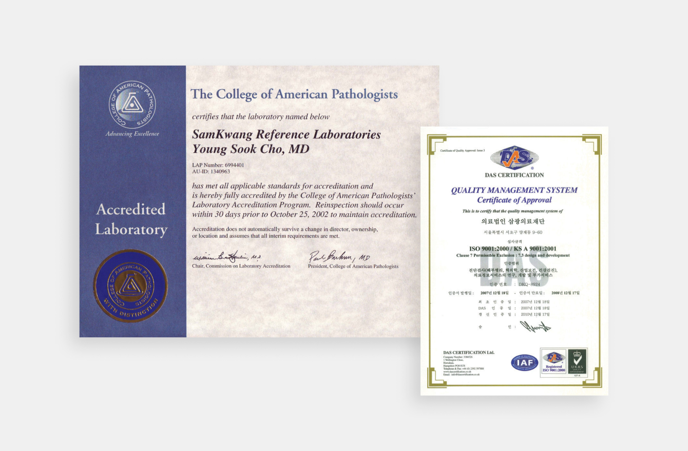
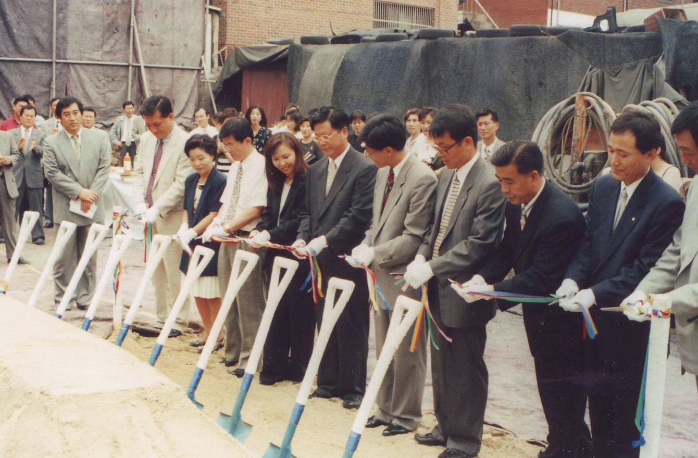

- 2020-NOW
- 2010-2019
- 2000-2009
- 1980-1999
2020-NOW

2023
- 서울본원 검사실 확장 개편
- 부산센터 확장 및 병리검사실 구축
2022
- 삼광의료재단 중부센터 개원, 국내 최초 GLP Full Automation System 도입
- 김포국제공항 코로나19 검사센터 운영
- 서울특별시 코로나19 선별진료소 운영 (독립문공원, 현충원)
- 해외 입·출국 코로나19 검사센터 운영 (서울본원, 부산센터)
- 황태국 이사장, 제50회 보건의날 국무총리 표창 수상
- 제5회 생명나눔주간 기념 보건복지부장관상 수상
- 코로나19 방역 관계자 청와대 오찬 간담회 초청 참석
- 우수 대학생 교육기부단체 ‘국인’ 글로벌 멘토링 활동 후원 및 검사 지원
- 캄보디아 소외계층 의료지원을 위한 코미소 메디컬 센터 건립 후원 및 MOU 체결
2021
- 황태국 이사장, 한국검체검사전문수탁기관협회 회장직 연임
- 여성가족부 주관 ‘가족친화인증기업’ 선정
- 삼광바이오트리그룹-가톨릭대 의생명과학과 ‘SML 산학장학생’(1기) 수여
- 삼광바오트리그룹-테라젠이텍스그룹 MOU 체결
2020
- 삼광의료재단 창립 35주년
- SML 신 C.I. 구축 및 삼광바이오트리그룹 체제 개편
- 체외진단의료기기 임상적 성능시험기관 지정
- 코로나19 검사기관 지정 및 감염병 검사실 확장
- 입영장병 코로나19 전수검사 시행
2010-2019

2019
- 삼광의료재단 부산센터 개원
- 임상시험검체분석기관 지정
2018
- 특수건강진단기관 지정
- 일본 최대 임상검사 수탁기관 SRL과 임상검사 위탁 및 기술교류 협약 체결
2017
- NGS 기반 유전자 패널 검사 실시기관 승인 획득
- 고려대학교 구로병원 상호협력 업무 협약 체결
2016
- NGSP Level 1 (HPLC) 추가 인증 획득
- 삼광의료재단-가톨릭대학교 서울성모병원, 유전체 기반 정밀의료 추진 MOU
2015
- 삼광의료재단 창립 30주년
- SML 신 버전 및 핵심가치 제정
2013
- 중앙대학교병원과 헌혈 및 협력병원 협약체결
- 섬광의료재단 ㈜와이즈메디텍 PCR 진단키트의 개발 및 사업화 상호협력 협약 체결
2010
- 제3Lab 확장 이전
- 황태국 이사장, 노동부장관 표창장 수상
2000-2009

2009
- 종합건강검진센터 오픈
- 가톨릭중앙의료원과 MOU 체결
- 외국인환자 유치 의료기관 등록
2008
- NGSP Level 1 인증 획득
- 검사자동화시스템 (RSA Pro) 도입
2005
- 삼광의료재단 창립 20주년
- SML(Samkwang Medical Laboratories) 신 C.I 구축
- 1Lab 개축 및 2Lab 확장 이전
2003
- 홈페이지 개편 및 인터넷 결과 조회 서비스 개시
2000
- 국내 최초 해부병리, 임상병리 2개 분야 동시 CAP 인증 획득
- 홈페이지 오픈(www.srl.co.kr) 및 정보서비스 개시
1980-1999

1997
- 양재동 신사옥 완공으로 삼광빌딩으로 검사실 확대 이전
1991
- 전산 Program 개발 및 검사장비 interface 구축
1989
- 검사결과 전산화 및 지방 사무소 On-Line Network 구축
1986
- 대한임상검사 정도관리협회 가입
- 수탁검사실시 인정기관 인가